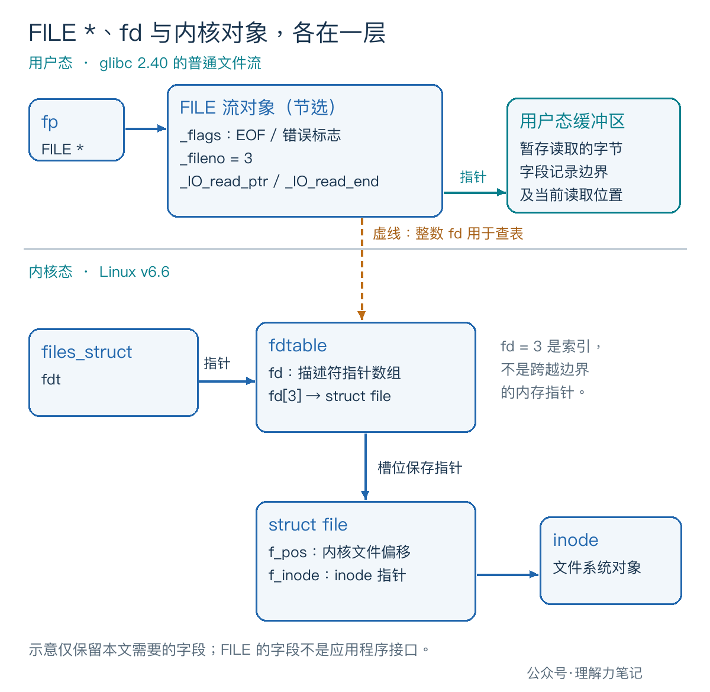
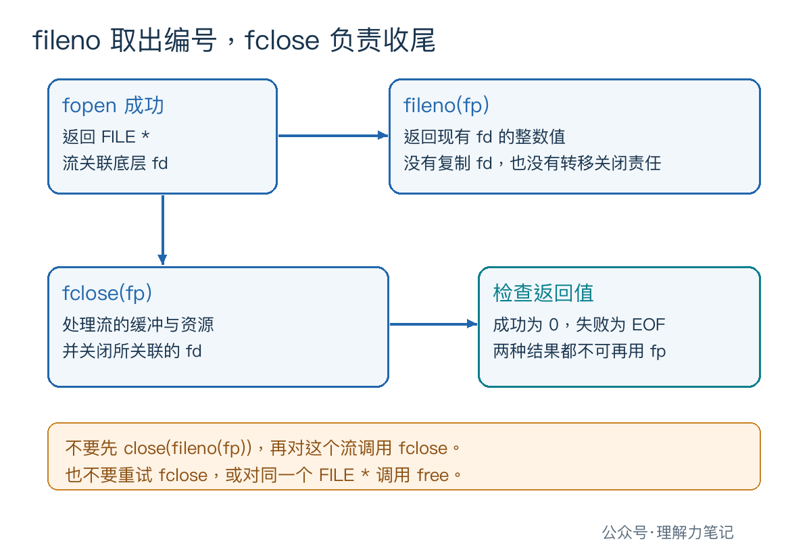

用 open 打开文件，拿到的是一个整数 fd；换成 fopen，返回值就成了 FILE *。它指向文件内容吗？这个指针和 fd 又怎么对应？
FILE *指向 C 标准 I/O 库管理的流对象。 对本文讨论的 POSIX 普通文件流，库在用户态维护缓冲和读写状态，并通过关联的 fd 访问文件。fd 是整数编号，FILE *是对象指针，两者不能强制转换后互用。
这里的“流”，可以先理解成库替你管理的一条输入或输出通道。FILE 对象记录着这条通道当前的使用情况。
这篇文章怎么读？
只想分清 FILE * 和 fd，先看第一章；想知道多出来的对象负责什么，再看机制和工程写法。
| 你是谁 | 看哪一章 | 会得到什么 |
|---|---|---|
| 搜索者 / 被推荐者 | 第一章 · 先解决问题 | 用可运行代码看到指针、fd 和流状态 |
| 学习者 | 第二章 · 机制解释 | 分清用户态流对象与内核文件对象 |
| 编程者 | 第三章 · 工程使用 | 接口选择和资源关闭的规则 |
| 求职者 | 第四章 · 面试提炼 | 说清关系，也能回答适用边界 |
准备一个只有字母 A、没有换行的文件。程序用 fopen 打开它，通过 fileno 取出底层 fd，再读取两次，观察流状态。
保存为 stream_identity.c：
fgetc 返回 int，既能表示读取到的字节，也能表示 EOF。feof 和 ferror 分别查询流的文件结束标志和错误标志；代码中的 !! 把“零或非零”统一打印成 0 或 1。
本次实测环境是 macOS 14.8.8、x86_64、Apple clang 16.0.0。示例使用 POSIX 接口，可在 Linux 上按相同命令编译；下列输出来自本机，Linux 内部实现另用源码核对。
在新建的实验目录中运行，避免覆盖已有同名文件：
实际输出：
第一行同时出现了内存地址和整数编号：fp 用 %p 打印，fd 用 %d 打印。地址和 fd 都可能随运行环境变化，不能依赖这里恰好得到的 3。
随后，第一次读取拿到 A，在本机编码中数值为 65，此时结束标志仍为 0；第二次读取碰到文件末尾，返回 EOF，结束标志变为 1，错误标志仍为 0。读到末尾和读取失败，是流对象记录的两种不同状态。
换成不存在的路径，程序输出 fopen: No such file or directory，退出状态为 1。在本机把 . 作为输入，打开成功后读取失败，输出 first fgetc: Is a directory，并经过同一条清理路径关闭流。目录是否能被这样打开、错误在哪一步发生，不能据此推广到所有平台。
这个实验展示了公开接口能观察到的关系和状态，没有观察缓冲区内部，也没有测量系统调用次数。
库需要知道：已经读到内存的字节还剩多少，待输出的字节放在哪里，是否遇到文件末尾，前面的操作有没有出错。这些信息构成了流的状态。
以 glibc 2.40 的普通文件流为例，FILE 对应的内部结构包含这些字段：
| 字段 | 本文关注的作用 |
|---|---|
_fileno |
保存关联的文件描述符 |
_IO_read_ptr、_IO_read_end |
标出读缓冲中当前位置与可读区域末尾 |
_IO_write_base、_IO_write_ptr |
记录写缓冲中的数据范围 |
_flags |
包含文件结束、错误等状态标志 |
这些字段用于解释实现，业务代码应使用 fileno、feof、ferror 等公开接口。C 标准没有规定这套字段名，不同 C 库的布局也可能不同。FILE 对象本身更不等于把整个文件装进内存。

对 glibc 的普通 fopen 路径，可以按三个动作理解：创建并初始化用户态流对象；按模式打开底层文件，取得 fd；把 fd 和流对象关联起来，向调用者返回 FILE *。实际打开失败时，库会清理已经创建的对象，并返回空指针。
进入 Linux 内核后，fd 用来索引进程关联的描述符表。图中的 files_struct 通过 fdt 指向 fdtable，其中的 fd[3] 槽位保存一个指向 struct file 的指针。这个内核对象记录打开文件的状态，包括偏移量 f_pos，再通过 f_inode 关联 inode，即文件系统中的文件对象。
图中跨越用户态与内核态的虚线表示“按整数编号查表”。用户态 FILE 并没有保存一个供程序直接访问内核 struct file 的指针。图里的结构和字段分别依据 glibc 2.40、Linux v6.6；它们用于解释 Linux 实现，不代表本机 macOS 的内部布局。
当读缓冲中还有数据，库可以直接取出一个字节并推进缓冲区指针；缓冲用完后，普通文件流才需要通过底层读取补充数据。因此，多次 fgetc 可能共用一次底层读取的结果。
glibc 的普通文件读路径在底层读取返回 0 时设置 EOF 标志，失败时设置错误标志。实验里第二次读取后的状态，便能从这种状态管理机制理解。这里说的是源码行为；本次实验没有跟踪 Linux 的 read 调用。
写入方向也有用户态缓冲：库可能先保存待写字节，再交给底层 I/O。缓冲何时刷新、刷新是否等于落盘，各有条件；本篇只用它说明流对象为什么需要比 fd 更多的信息。
读配置文件、逐行处理文本、输出格式化内容，标准 I/O 往往更方便。需要直接配合 poll、epoll、非阻塞 I/O，或精确处理底层读写返回值时，fd 接口通常更合适。
fopen、fgetc、fclose 属于 ISO C 标准 I/O 接口；fileno 属于 POSIX，并非 ISO C 的接口。示例在头文件前定义 _POSIX_C_SOURCE 200809L，声明要使用相应的 POSIX 功能。
取出了 fd，也不意味着可以随意混用 fgetc 和 read。流可能已经预读，内核文件偏移和库下一次准备交给你的字节位置会有差别；对同一个底层打开文件混用两套 I/O，需要遵守额外的协调规则。
fileno(fp) 返回流已经关联的 fd，不会复制描述符，也不会转移关闭责任。示例因此只调用一次 fclose(fp)，没有再调用 close(fd)。

fclose 会处理流的缓冲与资源，并关闭关联的 fd。若先执行 close(fileno(fp))，流对象仍留在库中，底层 fd 却已经被关闭；继续操作这个流会出问题，fd 编号若又被复用，还会让资源关系更难判断。
同样，不要把 fp 交给 free。释放一块内存无法代替标准 I/O 库的关闭流程。fclose 返回后，无论结果是否成功，都不能再使用这个流，也不能靠重试 fclose 解决错误。
上面的示例可以保留为一个小型框架：fopen 失败时直接报告错误；成功后，任何失败都跳到 cleanup；在那里关闭流，再检查标准输出的刷新结果。关闭失败会把最终退出状态改成失败，不会被前面的成功覆盖。
EOF 本身不足以说明出了错，所以每次读取后用 ferror 判断。只有接口报告失败时才读取错误信息；代码在清理前立即调用 perror，避免后续动作覆盖原来的 errno。正常读到文件末尾不调用 perror。
本例面向单线程、普通文件，读取失败时选择报告并退出。它没有设计 EINTR 恢复策略，也没有处理非阻塞流的等待与重试；不能原样当作网络服务的读取循环。本次还实测了标准输出不可写的情况，程序在 fflush(stdout) 处发现错误，并以失败状态退出。
FILE * 和 fd 有什么区别？ FILE * 指向库管理的流对象，流对象维护缓冲和状态；fd 是文件描述符。POSIX 普通文件流通过关联的 fd 使用底层文件，fileno 可取得这个编号。
每个 FILE * 都有 fd 吗？ 不能这样概括。比如 Linux 的 fmemopen（POSIX 接口，后续会单独讲解）创建内存流，没有关联的文件描述符，对它调用 fileno 会失败。本篇的对应关系限定在 fopen 打开的普通文件流。
拿到 fd 后该由谁关闭？ 如果只是通过 fileno 取得现有 fd，原来的流仍负责其生命周期，最后调用 fclose，不要再分别关闭两次。
struct file、f_pos 和 f_inode。本文为公众号「理解力笔记」原创。转载请联系作者，并保留出处。